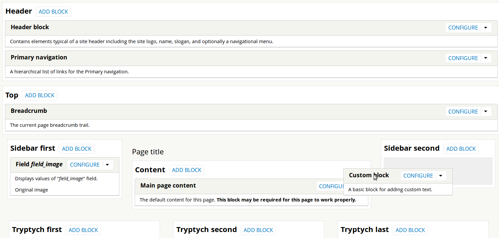

Developing Layouts in the Backdrop CMS: The Drupal Fork
Nate Haug - @quicksketch
Take this conversation online by tweeting using the hashtag #SrijanWW


A fork of Drupal
Why Fork Drupal?


Different tools for different jobs


Philosophy
Backdrop Principles
- Backwards compatibility is important
- Write code for the majority
- Include features for the majority
- Ensure Backdrop can be extended
- Meet low system requirements
- Plan and schedule releases
- Always remain Free & Open Source

Audience + Direction
Backdrop Mission
Backdrop CMS enables people to build highly customized websites, affordably, through collaboration and open source software.
Backdrop Mission
Backdrop CMS enables people to build highly customized websites, affordably, through collaboration and open source software.
Backdrop Out of the Box
- views
- ctools
- token
- pathauto
- libraries
- entity
- admin_menu
- webform
- imce
- date
- google_analytics
- wysiwyg
- jquery_update
- ckeditor
- link
- backup_migrate
- rules
- module_filter
- In core
- Ported
- Underway
Layouts
New structural site-building tool in Backdrop.
Separating the Concept of Themes and Site Structure


Switching Themes


In Drupal 7
- Switching themes would move over blocks only if regions had identical names.
- Any missing regions? Block positions simply discarded.
- Site structure (block positions) bound tightly to appearance (the theme).
In Backdrop
- Layouts are separated from themes.
- Switching themes has no effect on block positions.
- Every theme has a responsive layout.
- Site structure decoupled from appearance.
New Features and Capabilities

- Multiple layouts! Each URL can have a separate set of regions and blocks.
- Reuse blocks as many times as you like in different layouts.
- Contexts! Display/toggle based available information (a node, user, etc.)
Contexts

- Blocks that require certain data (e.g. a node) can appear only on certain paths.
- Block Conditions can toggle based on available data (e.g. content type)
Multiple Contexts

- Multiple contexts (e.g. both a node and user) can exist at the same path.
- If multiple contexts of the same type exist, conditions and blocks automatically provide a select list.
Creating New Layout Templates
Super easy and familiar for themers
Layout directory structure
- /layouts/fancypants
- fancypants.info
- fancypants.css
- preview.png
- layout--fancypants.tpl.php
fancypants.info
name = Fancy pants
type = layout
backdrop = 1.x
regions[header] = Header
regions[top] = Top
regions[content] = Content
regions[sidebar] = Sidebar
regions[footer] = Footer
Blocks
Improved and more powerful!
Drupal 7: hook_block_info()
function book_block_info() {
$blocks['navigation'] = array(
'info' => t('Book navigation'),
'description' => t('Shows the table of contents for a book.'),
);
return $blocks;
}
Backdrop: hook_block_info()
function book_block_info() {
$blocks['navigation'] = array(
'info' => t('Book navigation'),
'description' => t('Shows the table of contents for a book.'),
'required contexts' => array('node' => 'node'),
);
return $blocks;
}
Drupal 7: hook_block_view()
function book_block_view($delta = '') {
$node = menu_get_object();
$block = array();
if ($node) {
$book_mode = variable_get('book_mode', 'all_pages');
$block['subject'] = t('Table of Contents');
$block['content'] = _book_toc($node, $book_mode);
}
}
return $block;
}
Backdrop: hook_block_view()
function book_block_view($delta = '', $settings, $contexts) {
$node = $contexts['node'];
$block = array();
if ($node) {
$book_mode = $settings['book_mode'];
$block['subject'] = t('Table of Contents');
$block['content'] = _book_toc($node, $book_mode);
}
}
return $block;
}
Hate $delta?
- In D7, each module's block hooks had to accomodate all blocks within that module.
- Really ugly
hook_block_configure(), all forms within a single function. - All hooks need to be in .module file, unnecessary code inclusion.
Backdrop: Block Classes
function book_block_info() {
$blocks['navigation'] = array(
'info' => t('Book navigation'),
'description' => t('Shows the table of contents for a book.'),
'required contexts' => array('node' => 'node'),
'class' => 'BookNavigationBlock',
);
return $blocks;
}
Example Block Class
class BookNavigationBlock extends Block {
function getTitle() {
return = t('Book navigation')
}
function getContent() {
return _book_toc($this->contexts['node'], $this->settings['book_mode']);
}
function form($form, &$form_state) {
return _book_configure_form($form, $form_state);
}
}
All block callbacks within a single class. No other hooks (hook_block_view(), hook_block_configure(), etc. are necessary.
Demo!
IRC: #backdrop
http://backdropcms.org
github.com/backdrop
@backdropcms
Take this conversation online by tweeting using the hashtag #SrijanWW